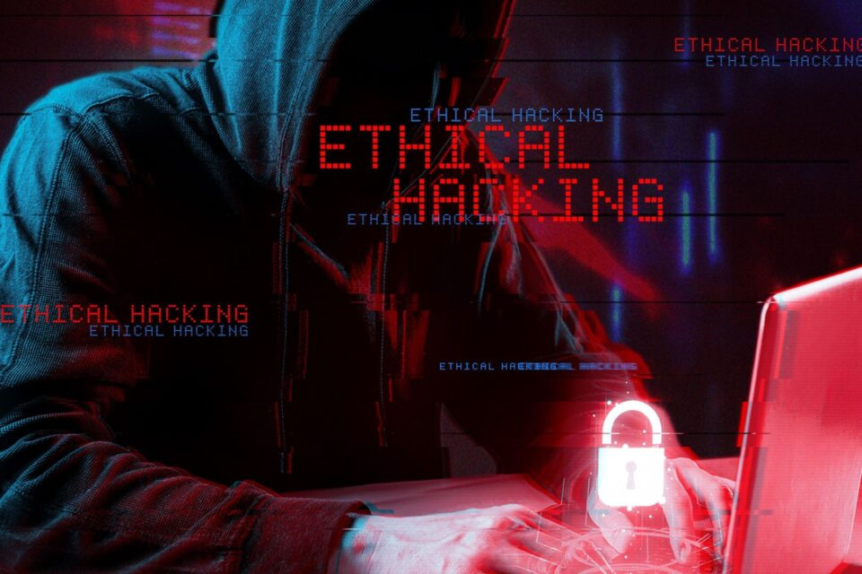

L'Ethical Hacker est un expert en sécurité informatique dont la mission est de tester la sécurité des systèmes (sites web, réseaux, applications) pour identifier leurs failles avant que des pirates malveillants ne les exploitent. Il utilise les mêmes techniques que les hackers «mauvais», mais de manière légale et contrôlée, pour aider les entreprises à protéger leurs données et renforcer leur sécurité. En trouvant les vulnérabilités, il permet de corriger les failles et d'éviter les cyberattaques.
Photo: |
Video: |